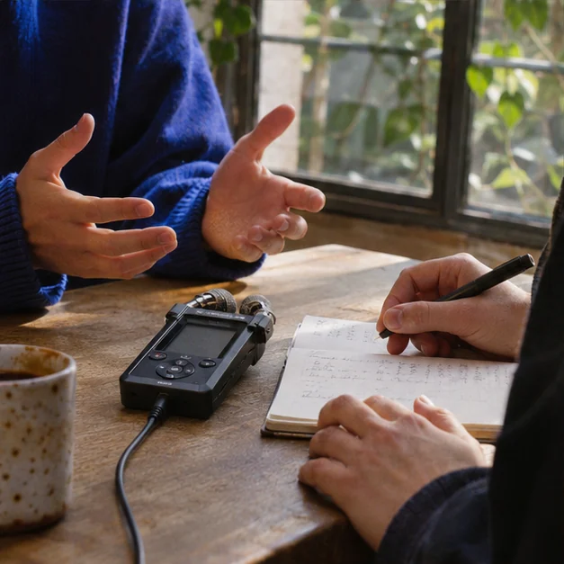
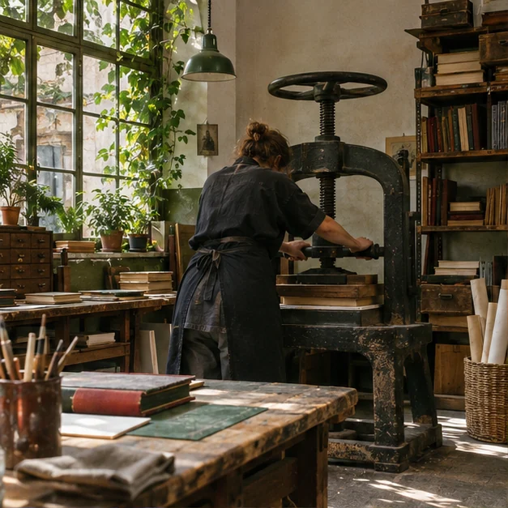
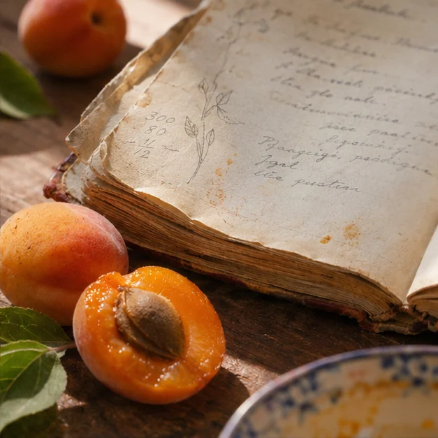
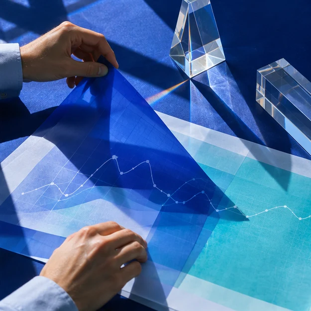

Mirka Kreuzerová · PR poradkyně
Dostaňme vaše téma k novinářům.
Přinášíte na trh nový výrobek, nebo vám právě volá redakce? Pomohu vám najít, co stojí za zveřejnění, a připravit člověka, který o tom bude mluvit.
S čím vám pomohu
Jak pracuji
S čím dnes přicházíte?
Vyberte si situaci a podívejte se, co bychom udělali jako první.

Modelový námět · otevření dílny
Co může redaktor vidět na vlastní oči?
Samotné oznámení o otevření dílny je krátká zpráva. Když ale knihařka ukáže, jak zachrání ručně psané poznámky ve staré kuchařce, je tu námět na reportáž.
Co spolu připravíme Pozvání pro konkrétní redakci, termín návštěvy a seznam věcí, které si může fotograf na místě vyfotit.

Modelová příprava · rozhovor
„Co byste při opravě nechala být?“
Otázka na postup často přinese výčet nástrojů. Otázka na rozhodnutí přivede knihařku ke konkrétní stránce, kterou rodina nechce ztratit.
Co spolu připravíme První otázku, dva příklady z praxe a krátkou zkoušku nahlas, aby odpověď zněla vaším hlasem.
Modelová situace · dotaz médií
Odpověď potřebují ještě dnes.
Začneme přesným zněním dotazu a časem uzávěrky. S vaším týmem projdeme, co můžete doložit hned a u čeho je ještě potřeba ověřit fakta.
Co spolu připravíme Krátké stanovisko, jméno mluvčího a čas, kdy redaktor může dostat doplnění.
Výběr z médií
Dva pohledy z praxe.
Marianne · Rozhovor
Marcela Joglová o pohybu po čtyřicítce
Olympijská běžkyně vysvětluje, jak si do běžného týdne poskládat trénink a odpočinek.
Číst v Marianne
Hospodářské noviny · Rozhovor
Martin Ondáš o podnikání s daty
Zakladatel BizMachine odešel z velké poradenské firmy. Jak dnes učí firmy hledat odpovědi v datech a co v tom mění umělá inteligence?
Číst v HNIlustrační fotografie k tématům. Celé rozhovory najdete u vydavatelů.